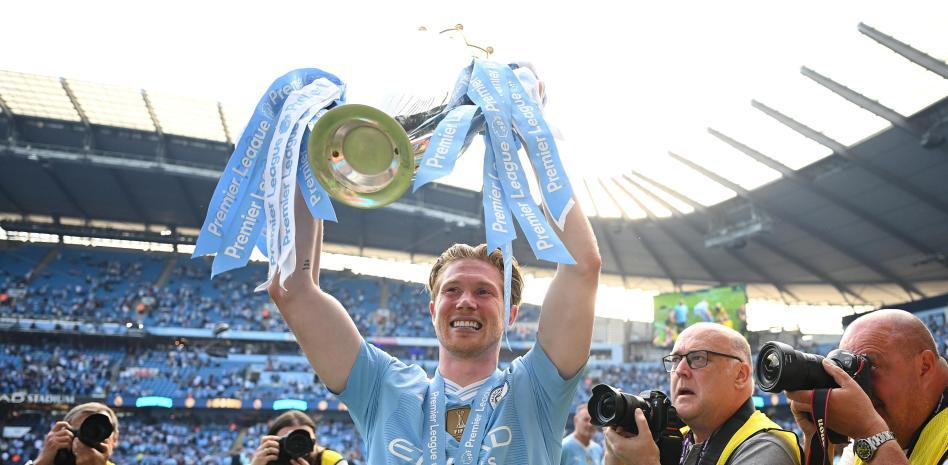

¿Quién será el sucesor de Kevin de Bruyne, icono de Guardiola, en el Manchester City?
Con Kevin de Bruyne se irá a final de temporada un icono del Manchester City de Pep Guardiola y uno de los emblemas de toda una generación de jugadores. Nunca hubiera podido ser la 'era Guardiola' en el City tal como la conocemos sin el centrocampista belga, sin su fútbol, sin su calidad, sin su liderazgo.
Kevin de Bruyne, de 33 años, ha sido en este Manchester City que lo ha ganado todo a las órdenes de Guardiola en esta última década un creador en términos absolutos, autor de goles, asistente, controlador del juego al más alto nivel.
Los aficionados del Manchester City nunca olvidarán el recital de juego que protagonizó el astro belga en el 4-0 infligido al Real Madrid en el Etihad en la vuelta de semifinales de la Champions 2022-23, la primera y hasta ahora única conquistada por los 'citizens'. De Bruyne fue el motor, el alma, de unos primeros 45 minutos que nunca olvidarán los seguidores 'citizens'.

Resumen: Fulham 3-2 Liverpool, Jornada 31, Premier league